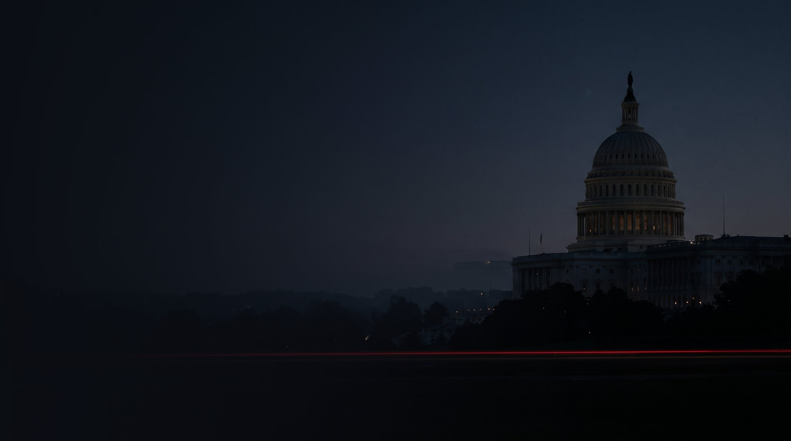
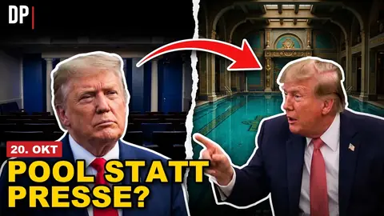
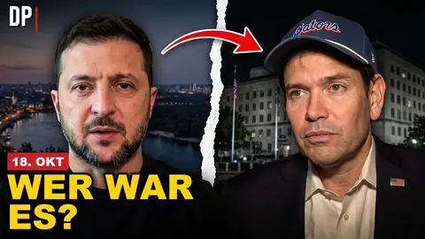
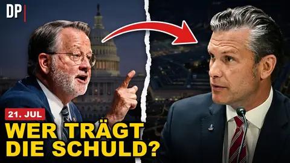
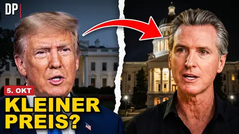
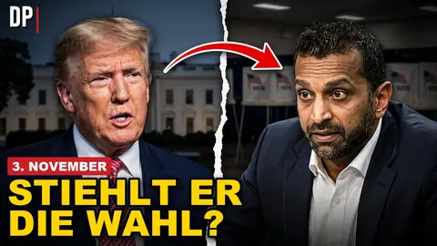

Was in Washington wirklich gesagt wurde.
Lange Ausschnitte aus Kongress, Senat und Weißem Haus – im Originalton, auf Deutsch eingeordnet. Was Trump verspricht, was er tut und was das für Deutschland und Europa bedeutet.
Neueste Folge
„Fällt wie ein Stein“ – Trumps Ölpreis-Versprechen und unser Diesel
Trump verspricht sinkende Preise, sein Botschafter spricht offen über einen Angriff auf den Iran. Was dahintersteckt – und warum wir es an der Zapfsäule spüren.
Auf YouTube öffnenDas Video wird erst nach dem Klick von YouTube geladen.
Alle Folgen
Jeden Tag eine neue Akte.
„Fällt wie ein Stein“ – Trumps Ölpreis-Versprechen und unser Diesel
25. Okt · NATO„Damit niemand mehr kleinredet“ – Tusk nach Hegseths Afghanistan-Rede
24. Okt · Nord Stream„Sie müssen für die Ukraine sterben“ – Lawrow über Merz und Nord Stream
24. Okt · Ukraine„Ob jemand da ist oder nicht“ – Trump zum Gipfel ohne Selenskyj

24. Okt · Pressefreiheit„Sind Sie ein kranker Mensch?“ – Trump vor Reportern im Oval Office

23. Okt · Starlink„Wer hat diese Entscheidung getroffen?“ – Selenskyj zur Starlink-Drossel

23. Okt · Iran„Sie, Sir, sind das Versagen“ – Senator Peters zu Hegseth
23. Okt · Europa„Das habe ich Deutschland gesagt“ – Trump und die Soldaten

22. Okt · Kalifornien„Lasst sie Los Angeles ausschalten“ – Trump gegen Newsom

22. Okt · Zwischenwahlen„Sie leiten ein Amtsenthebungsverfahren ein“ – Trumps Angst vor den Midterms
22. Okt · Diesel-Deal„Wo bleibt Deutschland?“ – Bessents Angriff nach dem Diesel-Deal
Zu diesem Thema gibt es noch keine Folge.
So arbeiten wir
Vom Originalton zur Folge.
- 01
Quelle
Wir suchen die Aufnahme selbst: Anhörung, Pressekonferenz, Kundgebung. Nicht die Zusammenfassung.
- 02
Einordnung
Was wurde gesagt, was vorher versprochen, was danach beschlossen? Mit Datum und Quelle.
- 03
Faktencheck
Jedes Zitat wird mit dem Transkript abgeglichen, jede Zahl mit ihrer Quelle. Was nicht belegt ist, sagen wir so.
- 04
Die Folge
Originalton mit deutschen Untertiteln, dazu die Frage: Was heißt das für Deutschland und Europa?
Unsere Grundsätze
Meinung ja. Erfindung nie.
Jedes Zitat ist echt. Jede Zahl hat eine Quelle.
- Zitate werden nicht gekürzt, bis sie etwas anderes sagen.Jeder Ausschnitt wird Wort für Wort mit dem Transkript abgeglichen – auch die deutsche Übersetzung.
- Fakten und Kommentar sind getrennt.Wir haben eine Haltung und sagen das offen. Aber was wir als Tatsache zeigen, ist belegt.
- Keine Beleidigungen, keine erfundenen Bilder.Harte Kritik ja – Spitznamen, KI-Fälschungen und unbelegte Vorwürfe nein.
- Fehler werden korrigiert.Wenn uns ein Fehler unterläuft, korrigieren wir ihn sichtbar in der Videobeschreibung.
Keine Folge verpassen.
Abonniert den Kanal und aktiviert die Glocke. Kurze Ausschnitte gibt es auf Facebook.